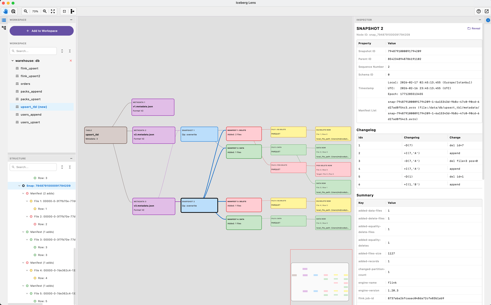
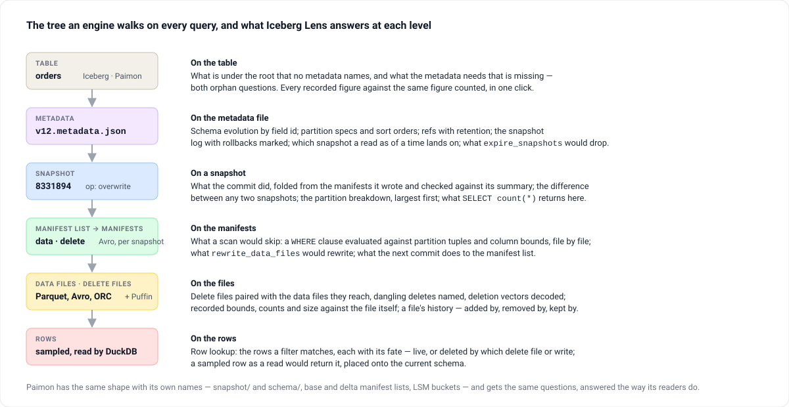
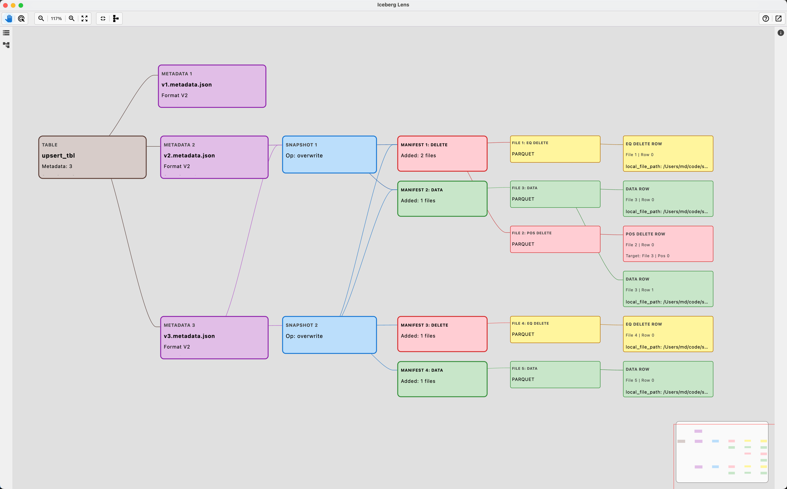

Desktop app · IntelliJ tool window · CLI · Kotlin · Apache-2.0
The table, the way the engine walks it.
Point it at a table directory and it draws the structure every query traverses — metadata files, snapshots, manifest lists, manifests, data and delete files, the rows inside — as a graph you click through, beside an inspector with every field the format records. Nothing is written back: it answers questions about a table, it never changes one.

Table-format figures are easy to state and easy to get wrong, because one manifest is carried forward by every snapshot that keeps its files. Every figure the metadata records is shown beside the same figure counted from the bytes — and the two sets, current snapshot and all retained history, are always labelled.
The whole tree, as a graph
Metadata files, snapshots, manifest lists, manifests, data and delete files, sample rows. Branches in their own columns; long sibling runs folded into pages that say what they hide. Four layouts, a snapshot filter, find, arrow keys, export as SVG, PNG or JSON.
Checked against the bytes
One click compares every recorded figure with the same figure counted — ids and lengths, manifest counts, commit summaries, snapshot totals, each file's partition against its own bounds — over the whole table. icelens check exits 1 on a disagreement.
What a scan would skip
A filter — WHERE clause or form — evaluated against partition summaries and column bounds, with the term that proved each skip. What a commit did, what differs between two snapshots, which snapshot a read as of a time lands on.
Rows and their fate
The rows a filter matches, read from the files it leaves, each marked live or deleted — by which vector, positional or equality delete on Iceberg; by which retraction or later write on Paimon — and traced through the retained snapshots.
Maintenance, planned the engine's way
What expire_snapshots would remove and what keeps the rest; what rewrite_data_files would rewrite; a Paimon bucket as its LSM tree and what the next compaction picks — planned as the engines' own planners decide it.
Read-only, local, offline
No catalog, no service: a table is opened by its location — a folder, or s3://, gs://, r2:// with a session-only key. The object-store filesystem refuses writes by type.
What it answers, level by level
The same tree the formats define, and the question each level answers.


- Table
Which format, which version, what the current snapshot holds and what history still keeps on disk; the maintenance summary and both directions of the orphan question.
- Snapshots
What each commit did, folded from the manifests it wrote and checked against its own summary; rollbacks marked on the log; refs, tags, branches and consumers with their retention.
- Manifests
Partition summaries decoded against each manifest's own spec, live and deleted entries, and the snapshots that still carry a manifest forward.
- Files and rows
Recorded bounds, counts, size and split offsets beside the file itself; delete files and deletion vectors paired with the rows they reach; sample rows with their fate.
Download
Installers for macOS (.dmg), Windows (.msi) and Linux (.deb) on GitHub Releases, with their own runtime. From source you need a JDK 17 or newer.
Installers
# macOS IcebergLens.dmg
# Windows IcebergLens.msi
# Linux iceberglens.deb
# the command line ships beside the app:
ln -s /Applications/IcebergLens.app/Contents/MacOS/icelens /usr/local/bin/icelensEvery build is on GitHub Releases; the IntelliJ plugin puts the same view in a tool window.
From source
git clone https://github.com/mmdemirbas/ice-lens.git && cd ice-lens
./gradlew run # the desktop app
./gradlew :cli:installDist # cli/build/install/icelens/bin/icelens
./gradlew testThen Add to Workspace: a warehouse folder or a single table folder — metadata/ for Iceberg, snapshot/ + schema/ for Paimon.
What the numbers mean
Two sets of figures, side by side, each labelled — because a manifest is referenced by every snapshot that carries its files forward.
| Group | Answers |
|---|---|
| Current snapshot | What the table holds now — the manifest closure of current-snapshot-id, live entries only. Its record count is what a query returns. |
| All retained history | What is still on disk — every manifest and data file reachable from any retained snapshot, deduplicated. This is what expiry and orphan cleanup reason about. |
The same engine from a terminal
For a script, a cron job or a CI step. --json prints the same as an object; the answer goes to stdout, anything the engine logs to stderr.
icelens summary /wh/db/orders # versions, snapshots, the current figures
icelens tree /wh/db/orders --depth 2 # metadata → snapshots → manifests → files
icelens show /wh/db/orders snap_8331894 --json # one node's rows, deferred ones read
icelens check /wh/db/orders # every recorded figure against the same figure counted;
# exit 1 on a disagreement, so a pipeline can gate on it
icelens check /wh/db/orders --files # and every live data file and statistics file opened too
icelens lookup /wh/db/orders "id = 42" # the rows a filter matches, each with its fate
icelens export /wh/db/orders --format csv --out files.csvFormat coverage
| Iceberg | Paimon | |
|---|---|---|
| Detection | metadata/ with *.metadata.json | snapshot/ + schema/ |
| Metadata | metadata.json v1–v3, snapshot log with rollbacks marked, refs with retention, partition specs, sort orders, statistics files, row lineage | snapshot-N, schema-N, tags, branches, consumers, the index manifest, ANALYZE statistics |
| Manifests | Manifest list → manifests, data and delete split, partition summaries decoded against each manifest's own spec | Base, delta and changelog manifest lists, replayed delta-over-base; the changelog per key as a consumer received it |
| Files | Data, positional-delete and equality-delete files, v3 deletion vectors decoded from Puffin, inherited sequence numbers and row ids | Data files with LSM level and bucket, file indexes decoded, external paths, data-evolution patch files, deletion vectors from the index file |
| Rows | Parquet and Avro via DuckDB, 50 per file, deleted rows marked, read by field id with v3 defaults and the name mapping | Same, with _ROW_ID, the +I/-U/+U/-D kind of each row, and the projection by the file's own schema id |
Limitations
Stated plainly, because a tool you inspect internals with has to be honest about its own.
- No catalog integration. Hive, Glue, REST, Nessie and Polaris are not spoken to; a table is opened by its location. S3, GCS and R2 are read through DuckDB with a key that is never persisted; HDFS and ADLS are not.
- Iceberg v3 is modelled up to what Spark 3.5 can write. Deletion vectors, row lineage and
added-rowsare read from real tables; variant, geometry, geography andtimestamp_nsparse without error but have no fixture yet. - A v2 positional delete file is not mapped to row cards — its targets are known only after reading the file, so the rows it removes are counted behind a click; a v3 deletion vector marks the cards.
- Equality deletes are evaluated only for a row in hand. The delete panel says which data files one may reach; the row lookup, which has the row, says whether it does.
- Sample rows are best-effort: capped at 50 per file, five drawn per data file, and slow on tables with many data files when Show Rows is on.